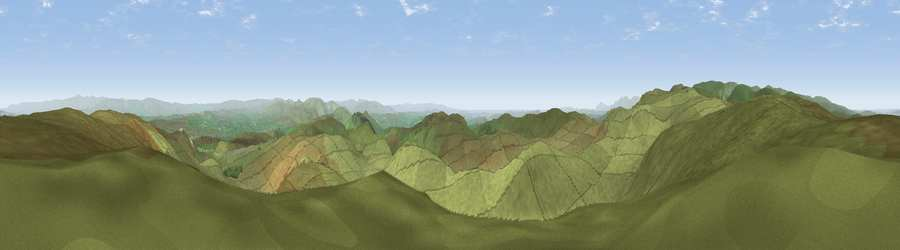

Viewpoint near Sadgill
#2331 in England · top 9% of its area beats it · near SadgillWhere it is
The exact computed spot (NY 52525 07575). Click the marker for map links.
The view, rendered

A 360° render of this exact spot computed from the terrain model, tree cover and land cover — summer colours, afternoon light, calibrated against photographs of famous viewpoints. Real trees, hedges and buildings will differ in detail.
The panorama
Grey silhouette: terrain skyline in each direction (720 bearings, Earth curvature and refraction included). Dashed green: skyline with trees (+15 m) and buildings (+8 m) as obstacles. Blue strip: how far the ground is visible on each bearing.
Where the view opens
Wedge length = distance to the farthest visible ground on that bearing (vegetation-aware). Rings at 10, 25 and 50 km.
What fills the view
98% grassland · 1% woodland
Angular shares of the visible panorama (visual magnitude), not map area. Landscape diversity 0.05 (0–1 Shannon).
Key numbers
More beautiful places nearby
The staircase of upgrades: each row has a higher view potential than everything closer. Driving times are estimates from straight-line distance, calibrated against real road routing — check an actual route before setting out.
| Place | Direction | Drive | Score |
|---|---|---|---|
| Swinklebank Crag | SW · 4 km | ~9 min | 76.9 |
| Viewpoint near Garnett Bridge | S · 4 km | ~9 min | 77.6 |
| Kentmere Pike | W · 6 km | ~13 min | 78.7 |
| Viewpoint near Sadgill | WNW · 7 km | ~14 min | 79.7 |
| Ill Bell | W · 9 km | ~18 min | 80.9 |
| High Street (summit) | WNW · 9 km | ~18 min | 82.6 |
| Viewpoint near Watermillock | NNW · 15 km | ~26 min | 83.5 |
| Viewpoint near Legburthwaite | WNW · 20 km | ~34 min | 83.8 |
54.46132, -2.73388 · source: screening · position refined by local search. Computed location — check access rights before visiting.